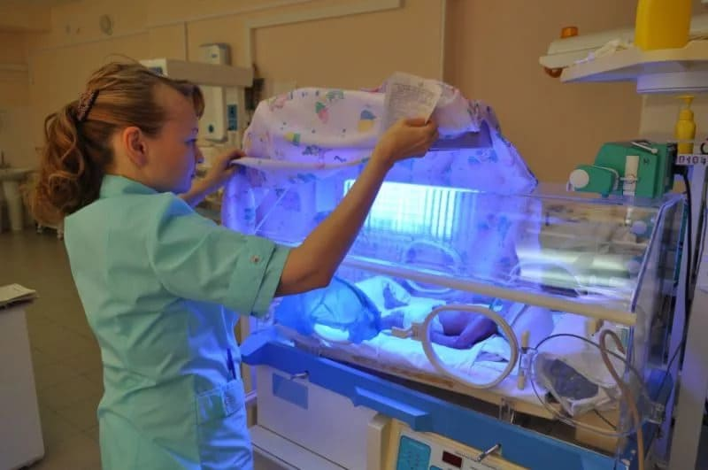

Еще одно патологическое состояние детей самого раннего возраста, особенно детей, находящихся на грудном вскармливании. Педиатры почему-то плохо ориентируются в этой проблеме, чуть что, готовы уложить новорожденного в стационар, поить всякой бесполезной белибердой (типа 5 % глюкозы или Хофитола) и запугивать молодых родителей.
Попробую объяснить максимально просто и понятно для родителей, прошу прощения у коллег за чрезмерное, местами, упрощение.
Все мы помним из курса школьной биологии, что в эритроцитах крови содержится гемоглобин – специальный белок, который переносит кислород по крови к тканям. Эритроциты не вечны, они умирают через 3–4 месяца, на замену им костный мозг постоянно вырабатывает новые.
При разрушении эритроцита (и, соответственно, гемоглобина) в кровь попадает продукт распада гемоглобина, билирубин, в токсичной жирорастворимой форме (его называют «непрямой», или «неконъюгированный»). Поскольку основа крови вода, непрямой билирубин не может в ней раствориться (как масло не может раствориться в компоте). В крови есть специальные белки, которые связывают непрямой билирубин, делают его на время водорастворимым и переносят в печень. В печени под действием ферментов непрямой билирубин проходит ряд химических реакций, становится нетоксичным водорастворимым «прямым» билирубином и в таком виде выводится из организма или используется для других целей.
Итак, в ходе естественных процессов в организме всегда присутствует определенное количество непрямого и прямого билирубина, при этом в норме количество прямого в 4 раза меньше непрямого. Суммарное количество этих двух видов билирубина называют общим билирубином.
Есть ряд заболеваний крови и печени, которые приводят к желтухам: гепатиты, холециститы, гемолитические анемии и т. д. В этой главе речь пойдет только о доброкачественных желтухах новорожденных и о том, как не спутать их с опасными желтухами.
Плод в утробе матери имеет очень высокую по сравнению с детьми и взрослыми концентрацию гемоглобина в крови, а после рождения «избыток» эритроцитов начинает быстро разрушаться, что приводит к резкому возрастанию уровня общего билирубина в крови. Это нормальный процесс. Поскольку непрямого билирубина очень много, то белков, связывающих его, не хватает для переноски к печени, и часть непрямого билирубина (который является жирорастворимым) начинает откладываться в подкожной жировой клетчатке (в ней удобнее всего растворяться), окрашивая ее в желтый цвет, и там ожидает своей очереди на транспортировку и переработку в печени. Пока непрямой билирубин не будет переведен в водорастворимую форму, он не может быть ни утилизирован, ни использован повторно. Все эти процессы и приводят к прокрашиванию кожи в желтый цвет, то есть «желтухе».
В норме к десятому дню жизни организм ребенка «разгребает» эти излишки, и желтуха проходит. По каким-то пока не до конца выясненным механизмам грудное вскармливание иногда затягивает этот нормальный процесс до третьего-четвертого месяца жизни. Это иногда заставляет всех нервничать, потому что затяжная желтуха может указывать на серьезные болезни малыша. Но в подавляющем большинстве случаев это просто желтуха грудного вскармливания, которая ничем не опасна. Назвали ее так потому, что у детей на искусственном вскармливании затяжных доброкачественных желтух не бывает почти никогда (это ни в коем случае не довод против грудного вскармливания, польза грудного молока с лихвой перевешивает этот маленький недостаток).
Итак, у вашего новорожденного малыша, находящегося на грудном вскармливании, желтуха держится больше десятого дня жизни. Чем это реально грозит? Есть три большие проблемы, риск которых врач должен исключить, прежде чем вас успокоить и сказать: «Забудьте, не опасно, к 3–4 месяцам пройдет само».
1) Ядерная желтуха. Это грозное осложнение любого чрезмерного повышения уровня непрямого билирубина в крови. Запасы жира в теле малыша невелики, и при нарастающем поступлении непрямого билирубина в кровь они быстро заполняются под завязку, после чего билирубин начинает пропитывать ядра мозга, нанося тяжелую необратимую травму. Это осложнение развивается только при уровне общего билирубина более 400 мкмоль/л (по некоторым данным, только более 440 мкмоль/л), но уже после 300–350 мкмоль/л пора начинать волноваться и назначать фототерапию, которая обычно проводится в стационаре
.
2) Холестаз. Иногда (очень-очень редко) дети рождаются с врожденной непроходимостью одного из малых желчных протоков или даже общего желчного протока. Это очень грозная проблема, она требует серьезного хирургического вмешательства.
Внешне младенцы с холестазом не выглядят здоровыми, но главный симптом холестаза – это резкое возрастание доли прямого билирубина от общего билирубина. То есть в биохимическом анализе крови будет не только опасный уровень увеличения общего билирубина, но и, главное, доля прямого билирубина будет составлять более М, а иногда даже более половины от общего. Это происходит потому, что поломка случилась уже «после» печени, печень нормально переводит непрямой билирубин в прямой, секретирует его в желчь, а вот выводить его не может (проток перекрыт), он обратно всасывается в кровь и бесцельно там циркулирует
3) Другие патологические причины желтухи (гепатиты, гемолизы и т. д). О них педиатр тоже обязан помнить, у них есть свои симптомы.
И все же редкие болезни бывают редко, и если мы видим младенца первых месяцев жизни с хорошим самочувствием, хорошими прибавками веса, на грудном вскармливании, но с желтухой, то это, скорее всего, желтуха грудного вскармливания, которая пройдет сама. А если мы сдадим ребенку биохимический анализ крови и увидим уровень общего билирубина ниже 330 мкмоль/л, а уровень прямого не более % от общего – мы можем перестать волноваться на эту тему.
Фототерапия – способ лечения, при котором на раздетого младенца светят интенсивным синим светом, НЕ СОДЕРЖАЩИМ УЛЬТРАФИОЛЕТА! Не вздумайте в домашних условиях светить на младенца ультрафиолетом – кварцевые обеззараживающие лампы, лампа Вуда, КУФ для физиотерапии, солярий и прочее – вы нанесете ему тяжелые ожоги.

Лечение разных видов патологических желтух тут обсуждать не стану, это отдельная, большая тема. Скажу еще только два слова про фототерапию.
В чем суть лечения? Под действием интенсивного света непрямой билирубин вступает в химическую реакцию и превращается в более водорастворимую форму; это не прямой билирубин, но эта форма гораздо легче растворяется в воде, и ее организм уже может утилизировать, что заметно снижает уровень билирубина в крови и риск развития ядерной желтухи. Обычный интенсивный свет, в принципе, тоже может быть использован для фототерапии, но только не прямые солнечные лучи – из-за риска ожогов и обезвоживания.
Прием дополнительной жидкости, помимо грудного молока, при желтухе бесполезен и не показан, кроме редких случаев выраженного недоедания и/или обезвоживания.
Хофитол, Урсофальк и гомеопатия «помогают» только потому, что это состояние проходит само. Фенобарбитал в ряде исследований показал неплохую эффективность, но из-за выраженной токсичности его применение считается необоснованным в большинстве случаев.
И, важно, доброкачественные младенческие желтухи не являются противопоказанием для вакцинации против вирусного гепатита В (и против любой другой вакцинации). Вакцинация не утяжеляет течение желтухи, и желтуха не утяжеляет переносимость вакцинации. Если врач дает медотвод по причине доброкачественной желтухи – это перестраховка и не более того.
(Сергей Бутрий "Здоровье ребенка: современный подход")